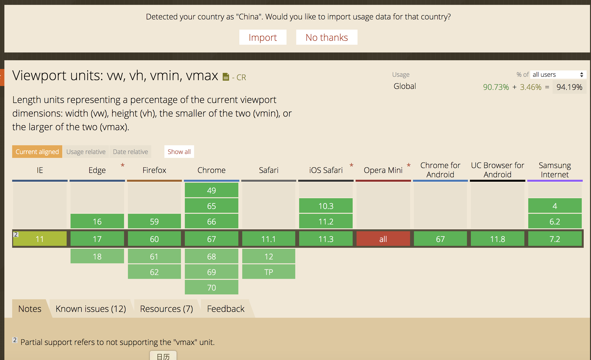

单位与值
前言
本人平时学习及收集内容，欢迎参入一起讨论。
内容
- px
- 视口
- 百分比
- em
- rem
- vw&vh/vmin&vmax
一、px
像素是网页布局的基础，一个像素表示了计算机屏幕所能显示的最小区域，像素分为两种类型：css 像素和物理像素。
二、视口
广义的视口，是指浏览器显示内容的屏幕区域，狭义的视口包括了布局视口、视觉视口和理想视口
- 布局视口
- 视觉视口
- 理想视口
2.1 布局视口
布局视口定义了 pc 网页在移动端的默认布局行为，因为通常 pc 的分辨率较大，布局视口默认为 980px。
2.2 视觉视口
视觉视口表示浏览器内看到的网站的显示区域，用户可以通过缩放来查看网页的显示内容，从而改变视觉视口。视觉视口的定义，就像拿着一个放大镜分别从不同距离观察同一个物体，视觉视口仅仅类似于放大镜中显示的内容，因此视觉视口不会影响布局视口的宽度和高度。
2.3 理想视口
理想视口或者应该全称为“理想的布局视口”，在移动设备中就是指设备的分辨率。换句话说，理想视口或者说分辨就是给定设备物理像素的情况下，最佳的“布局视口”。
上述视口中，最重要的是要明确理想视口的概念，在移动端中，理想视口或者说分辨率跟物理像素之间有什么关系呢？
为了理清分辨率和物理像素之间的联系，我们介绍一个用 DPR 设备像素比来表示，则可以写成：
1 DPR = 物理像素／分辨率
在不缩放的情况下，一个 css 像素就对应一个 dpr，也就是说，在不缩放
1 CSS像素 = 物理像素／分辨率
此外，在移动端的布局中，我们可以通过 viewport 元标签来控制布局，比如一般情况下，我们可以通过下述标签使得移动端在理想视口下布局：
<meta id="viewport" name="viewport" content="width=device-width; initial-scale=1.0; maximum-scale=1; user-scalable=no;">
meta 标签的每一个属性的详细介绍如下：
| 属性名 | 取值 | 描述 |
|---|---|---|
| width | 正整数 | 定义布局视口的宽度，单位为像素 |
| height | 正整数 | 定义布局视口的高度，单位为像素，很少使用 |
| initial-scale | 正整数 | 初始缩放比例，1 表示不缩放 |
| minimum-scale | 正整数 | 最小缩放比例 |
| maximum-scale | 正整数 | 最大缩放比例 |
| user-scalable | 正整数 | 是否允许手动绽放页面，默认值为 yes |
其中我们来看 width 属性，在移动端布局时，在 meta 标签中我们会将 width 设置称为 device-width，device-width 一般是表示分辨率的宽，通过 width=device-width 的设置我们就将布局视口设置成了理想的视口。
三、百分比
当浏览器的宽度或者高度发生变化时，通过百分比单位，通过百分比单位可以使得浏览器中的组件的宽和高随着浏览器的变化而变化，从而实现响应响应式的效果。
3.1 css 中的子元素中的百分比（%）到底是谁的百分比？
直观的理解，我们可能会认为子元素的百分比完全相对于直接父元素，height 百分比相对于 height，width 百分比相对于 width。当然这种理解是正确的，但是根据 css 的盒式模型，除了 height、width 属性外，还具有 padding、border、margin 等等属性。那么这些属性设置成百分比，是根据父元素的那些属性呢？此外还有 border-radius 和 translate 等属性中的百分比，又是相对于什么呢？
3.2 子元素 height 和 width 的百分比
子元素的 height 或 width 中使用百分比，是相对于子元素的直接父元素，width 相对于父元素的 width，height 相对父元素的 height。比如：
<div class="parent">
<div class="child"></div>
</div>
2
3
如果设置： .father{ width:200px; height:100px; } .child{ width:50%; height:50%; } 展示的效果为：
3.3 top 和 bottom 、left 和 right
子元素的 top 和 bottom 如果设置百分比，则相对于直接非 static 定位(默认定位)的父元素的高度，同样子元素的 left 和 right 如果设置百分比，则相对直接非定位(默认定位的)父元素的宽度。
3.4 padding 和 margin
子元素的 padding 和 margin 如果设置百分比，不论是垂直方向或者是水平方向，都相对于直接父亲元素的 width，而与父元素的 height 无关。
举例来说：
.parent{
width:200px;
height:100px;
background:green;
}
.child{
width:0px;
height:0px;
background:blue;
color:white;
padding-top:50%;
padding-left:50%;
}
2
3
4
5
6
7
8
9
10
11
12
13
3.5 border-radius
border-radius 不一样，如果设置 border-radius 为百分比，则是相对于自身的宽度
3.6 百分比单位布局应用
百分比单位在布局上应用还是很广泛。
比如我们要实现一个固定长宽比的长方形，比如要实现一个长宽比为 4：3 的长方形，我们可以根据 padding 属性来实现，因为 padding 不管是垂直方向还是水平方向，百分比单位都相对于父元素的宽度，因此我们可以设置 padding-top 为百分比来实现，长宽自适应的长方形：
<div class="trangle"></div>
3.7 百分比单位缺点
从上述对于百分比单位的介绍我们很容易看出如果全部使用百分比单位来实现响应式的布局，有明显的以下两个缺点：
- 计算困难,如果我们要定义一个元素的宽度和高度，近照设计稿，必须换算成百分比单位。
- 各个属性中如果使用百分比，相对父元素的属性并不是唯一的。比如 width 和 height 相对于父元素的 width 和 height，而 margin、padding 不管垂直还是水平方向都相对比父元素的宽度、border-radius 则是相对于元素自身等等，造成我们使用百分比单位容易使布局总是变得复杂。
四、em
em（font size of the element）是指相对于父元素的字体大小的单位。
1em 默认为 16px。
五、rem
rem 是一个灵活的、可扩展的单位，由浏览器转化像素并显示。rem 单位无论嵌套层级如何，都只相对于浏览器的根元素的 font-size。
1 rem = 12px
六、vw/vh&vmin/vmax
6.1 什么是 vw/vh ?
CSS3 中引入了一个新的单位 vw/vh，与视图窗口有关，vw 表示相对于视图的宽度，vh 表示相对于视图窗口高度，除了 vw 和 vh 外，还有 vmin 和 vmax 两个相关的单位。各个单位具体的含义如下：
| 单位 | 含义 |
|---|---|
| vw | 相对于视窗的宽度，视窗宽度是 100vw |
| vh | 相对于视窗的高度，视窗高度是 100vh |
| vmin | vw 和 vh 中的较小值 |
| vmax | vw 和 vh 中的较大值 |
这里我们发现视窗宽高都是 100vw／100vh，那么 vw 或者 vh，下简称 vw，很类似百分比单位。vw 和%的区别为：
| 单位 | 含义 |
|---|---|
| % | 大部分相对于祖先元素，也有相对于自身的情况比如（border-radius、translate 等) |
| vw/vh | 相对于视窗的尺寸 |
6.2 vw 单位换算
同样的，如果要将 px 换算成 vw 单位，很简单，只要确定视图的窗口大小（布局视口），如果我们将布局视口设置成分辨率大小，比如对 iphone6/7 375*667 的分辨率，那么 px 可以通过如下方式换算成 vw：
1px = （1/375）*100 vw
6.3 vw/vh 单位的兼容性
可以在caniuse 查看各个版本的浏览器对 vw 单位的支持性。

参考资料
- 响应式布局的常用解决方案对比(媒体查询、百分比、rem 和 vw/vh）
- 【CSS】单位 px/em/rem/vh/vw/vmin/vmax 区别
- CSS 像素、物理像素、逻辑像素、设备像素比、PPI、Viewport
联系作者
平凡世界，贵在坚持。